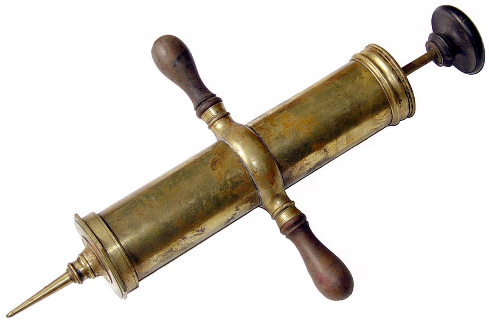
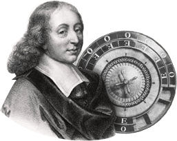

Pascal
Pascal
Pascal worked on the study of the principles of hydraulic fluids. His inventions for this area include the hydraulic press and the syringe. He also made a proof of Aristotle's statement that stated "Everything that is in motion must be moving something". He proved that the idea of vacuum was possible. He created many controversies with scientists.
The 17th century inventor also created a very early form of roulette and the roulette wheel. He created the mechanism in search of a perpetual motion machine.

